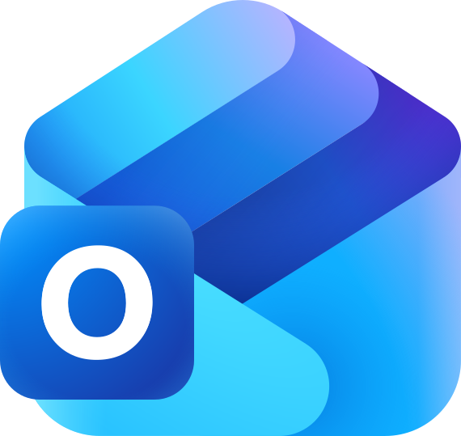
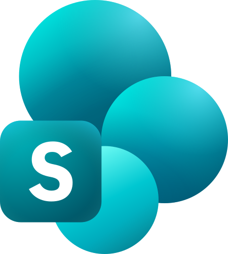
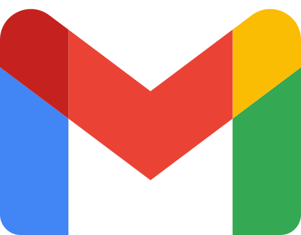

Drei Teile, die zusammenpassen
- Die Basis Die Plattform, die fertig ist: Chat mit Quellen, euer Firmenwissen, Dokumente in Word, Excel, PowerPoint und PDF, Workflows und Zugriffsrechte pro Ordner. Betrieben in der EU.
- Euer Puzzlestück Was eurer Firma fehlt, bauen wir dazu: eure Abläufe als Workflows, und die Anbindung an eure Branchensoftware, wenn sie eine Schnittstelle hat.
- Die Begleitung Neue Modelle und Funktionen kommen laufend. Wir prüfen sie, bauen ein, was euch nützt, und zeigen es euren Leuten. Ihr habt eine feste Ansprechperson, keine Hotline.
Das Postfach am Morgen
Kontexo liest die neuen Mails und schreibt Antworten für die, die eine brauchen. Gesendet wird von euch.
- Lesen. Kontexo liest die Mails in eurem Outlook und sucht die Antworten in euren Unterlagen: Preisliste, Verträge, offene Posten, Protokolle.
- Entwerfen. Jede Antwort liegt als Entwurf in eurem Outlook, mit den Zahlen aus den Quellen. Was keine Antwort braucht, bleibt liegen.
- Senden. Ihr lest durch, ändert, was nötig ist, und schickt mit einem Klick aus eurem eigenen Postfach.

Wie Kontexo arbeitet
-
Wissen
Kontexo liest eure Unterlagen ein. Bei jeder Frage sucht es die passenden Stellen heraus und gibt nur die ans Sprachmodell, mit Quelle. So bleibt jede Antwort schnell und günstig, auch wenn die Ablage wächst. Das Modell läuft in der EU und bewahrt den Inhalt nach der Antwort nicht auf.
-
Agenten
Ein Agent ist ein Assistent für eine Aufgabe, mit eigener Anleitung, eigenen Ordnern und den Werkzeugen, die er braucht. Zum Beispiel einer für Angebote und einer für die Buchhaltung.
-
Workflows
Abläufe in Schritten, die von selbst starten: zu einer Uhrzeit, bei einer neuen Mail oder auf Knopfdruck. Ihr beschreibt den Ablauf in Worten, Kontexo baut ihn.
-
Anbindungen
Outlook, Teams, SharePoint, Gmail, FinanzOnline und mehr, jeweils mit dem Konto der Person, die fragt. Die ganze Liste steht gleich darunter.
Verbunden mit dem, was ihr habt
Postfach, Teams und Ablage verbindet jede Person mit dem eigenen Konto. Kontexo sieht dort nur, was diese Person selbst sehen darf.
Microsoft 365
Mit echten Konten gelaufen: Outlook, Teams und SharePoint. Kalender und OneDrive sind gebaut.

OutlookMails suchen, lesen, beantworten. Ihr sendet.- Outlook-KalenderTermine lesen.
- TeamsChats, Kanäle und Besprechungen samt Mitschrift.

SharePointOrdner einlesen, mit den Rechten der Person, die fragt.- OneDriveDateien suchen und lesen, Ordner einlesen.
Google Workspace
Gmail und Kalender sind gebaut, noch nicht mit einem echten Konto gelaufen.

GmailMails suchen, lesen, beantworten. Ihr sendet.- Google KalenderTermine lesen, samt Link zur Besprechung.
Ämter
Das Firmenbuch ist mit echtem Zugang gelaufen, FinanzOnline ist gebaut.
- FinanzOnlinePost vom Finanzamt lesen und ablegen. Eingereicht wird nichts.
- FirmenbuchFirmen nachschlagen: Sitz, Rechtsform, Geschäftsführung.
Weitere
Gebaut, noch nicht mit einem echten Konto gelaufen.
- StripeKunden, Rechnungen und Zahlungen nachsehen. Nur lesend.
- JiraVorgänge suchen und lesen.
- ConfluenceSeiten suchen und lesen.
Euer Programm
Fehlt eines? Das ist euer Puzzlestück: Hat eure Branchensoftware eine Schnittstelle, bauen wir die Anbindung.
Für Microsoft 365 und Google Workspace richtet einmal ein, wer bei euch die IT betreut. Das erledigen wir gemeinsam.
Jede Person sieht nur, was sie sehen darf
Wer welchen Ordner sieht, bestimmt ihr. Und eure Daten liegen in der EU.
- Server in der EU. Kontexo läuft bei Hetzner in Deutschland, dort liegen auch eure Dateien.
- Sprachmodelle in der EU. Bei europäischen Anbietern, vermittelt über cortecs aus Wien. Freigeschaltet sind nur die drei auf seiner Geheimhaltungsliste: OVH, TensorX und AKI.
- Kein Training. Zero Data Retention ist vertraglich vereinbart: Der Inhalt eurer Anfragen wird nach der Antwort nicht aufbewahrt.
- Gekapselt. Die Datenbank trennt eure Firma von allen anderen.
- Zugänge geschützt. Anmeldung mit zweitem Faktor, Zugangsdaten verschlüsselt. Wie lange Chats bleiben, stellt ihr ein.
- Mit Vertrag. Ein Vertrag zur Auftragsverarbeitung gehört dazu.
So fangen wir an
- Wir sehen uns euer Büro an. Kostenlos und unverbindlich: Ihr zeigt uns zwei, drei Abläufe, die Zeit kosten. Danach bekommt ihr einen schriftlichen Vorschlag mit Preis.
- Wir bauen, was fehlt. Bei euch im Betrieb, an euren Unterlagen, und wir zeigen euren Leuten, wie sie selbst weiterbauen.
- Wir bleiben eure Ansprechperson. Für Anbindungen, neue Modelle und alles, was ihr nicht selbst bauen wollt.
Kontexo gibt es auch allein, als Lizenz für euren Betrieb. Wir empfehlen, mit einem Ablauf gemeinsam anzufangen: Dann seht ihr an euren eigenen Unterlagen, was es kann.
Häufige Fragen
Für welche Firmen ist Kontexo gedacht?
Für Firmen ab fünf Leuten, vom Familienbetrieb bis zum Mittelstand, in jeder Branche, deren Büro mit Angeboten, Rechnungen, Verträgen und Mails arbeitet. Jede Person arbeitet mit eigenen Rechten.
Brauchen wir eine IT-Abteilung?
Nein. Für Microsoft 365 oder Google Workspace braucht es einmal die Freigabe von der Person, die bei euch die IT betreut. Den Rest richten wir gemeinsam ein.
Müssen wir die Einrichtung dazunehmen?
Nein. Kontexo gibt es auch allein, als Lizenz für euren Betrieb. Die Einrichtung lohnt sich, wenn ein Ablauf oder eine Anbindung gebaut werden soll.
Was passiert, wenn sich bei KI wieder alles ändert?
Eure Abläufe laufen weiter. Neue Modelle prüfen wir zuerst, und wir stellen erst um, wenn sie für euch besser sind.
Wo liegen unsere Daten?
Auf Servern in der EU: Kontexo und eure Dateien bei Hetzner, die Sprachmodelle bei europäischen Anbietern. Die eine Ausnahme ist die Websuche: Sie läuft über Anbieter in den USA und ist aus, bis ihr sie einschaltet.
Welche Sprachmodelle laufen?
Modelle, die bei europäischen Anbietern laufen. Welches gerade das beste für euch ist, prüfen wir laufend.
Was kostet es?
Eine Lizenz für euren ganzen Betrieb, nicht pro Person: Alle im Büro können damit arbeiten. Dazu, wenn ihr wollt, die Einrichtung und die Begleitung als monatliche Pauschale. Eure Zahl bekommt ihr nach dem ersten Gespräch, schriftlich.
Wer dahintersteht
Ich habe Kontexo gegründet, weil in Büros zu viel Zeit mit Suchen, Abtippen und immer gleichen Briefen verloren geht.
Vor der Informatik habe ich Bäcker gelernt und war Kunstmaler.
Kontexo ist aus meiner Bachelorarbeit über KI-Agenten entstanden. Das Institut für Informatik der Universität Innsbruck hat sie mit dem Best Bachelor Thesis Award 2025/26 ausgezeichnet.
Ich baue bei Kontexo an den Workflows und an den Anbindungen.
Gerade schließe ich mein Informatikstudium an der Universität Innsbruck ab. Mein Fach sind Backends: Schnittstellen, Ereignisse, vernetzte Geräte.
Daneben bin ich Skilehrer.
Reden wir über eure Firma
Öffnet euer Mailprogramm mit einer fertigen Nachricht an uns. Diese Seite speichert nichts.
- michael@kontexo.at
- +43 660 650 3435
- Terfens, Tirol